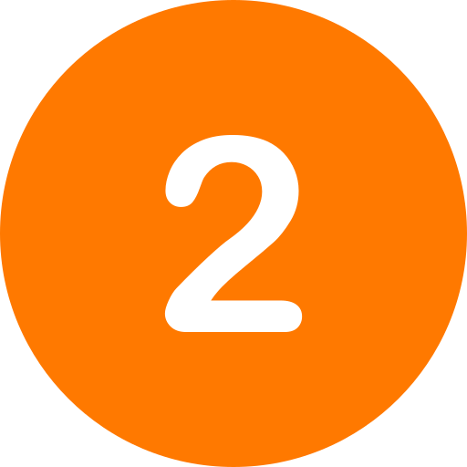
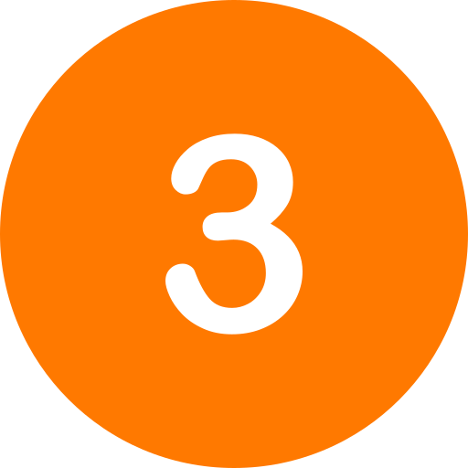

Proceso de adopción
Conocer los requisitos
En este primer paso vas a encontrar la información más importante para iniciar el
proceso de adopción.
Nuestro objetivo principal es garantizar el bienestar de cada
uno de nuestros peludos, por lo que es esencial cumplir con los requisitos establecidos.
Estos requisitos incluyen aspectos generales como, por ejemplo:
protecciones en balcones y ventanas, el compromiso de castración y seguimiento de la
adopción. Pero cada animalito es único y
pueden sumarse requisitos
igual de únicos ;)
Es muy importante que verifiques si cumplís con todas las condiciones al momento de
solicitar la adopción.
Tomandote el tiempo de revisar los requisitos, vas a estar un paso más cerca de
darle un
hogar lleno de amor
y acorde a sus necesidades a un peludito que te espera.
Solicitar adopción

Al solicitar la adopción tendrás que completar un
formulario de solicitud de adopción. Este formulario es una herramienta
fundamental en nuestro proceso de adopción,
ya que
permite a
los refugios conocerte mejor y verificar que cumplís con los requisitos necesarios para
proporcionar
un hogar amoroso y adecuado. Queremos asegurarnos de que cada animalito de Kalito
encuentre el hogar
perfecto y el compañero ideal.
Al completar el formulario, nos proporcionarás
información importante
sobre tu estilo de vida, experiencia previa con animales, tus motivaciones para adoptar
y las respuestas de
verificación de cumplimiento de los requisitos.
Esta valiosa información ayudará a los
refugios a evaluar la
compatibilidad entre tu perfil y el animalito.
Primer encuentro

El primer encuentro es una oportunidad especial que brindan los refugios para que puedas
conocer a tu futuro compañero y permitirle a él elegirte también.
A la vez, es la base para establecer el vínculo entre el
refugio y el adoptante. Ya que a partir de este punto, cada refugio tiene su
propio procedimiento para
concretar la adopción y realizar el seguimiento adecuado. Este puede incluir por
ejemplo: firmar un contrato de adopción, realizar visitas a tu hogar para evaluar las
condiciones, guiarte con pautas para un adaptación exitosa, entre otros.
El equipo del refugio estará dedicado a brindarte toda la información necesaria,
responder tus preguntas y acompañarte en esta nueva etapa llena de amor y de
pelitos.
Adopción responsable
¿Qué es la adopción responsable?
La adopción responsable de animales es un tema sumamente amplio y de gran
importancia. Implica reconocer desde el principio que un perro o un gato no son juguetes u objetos,
sino
seres vivos que requieren de cuidado y compromiso a lo largo de toda su vida.
No se trata solo de brindarles atención cuando son cachorros, sino de asegurar que sean amados y
atendidos en cada etapa de su crecimiento.
La adopción responsable también implica brindar una segunda oportunidad a los animales para que
puedan disfrutar de una vida plena y afectiva.
Es esencial establecer un vínculo sólido entre el adoptante y el animal antes de la entrega, ya que
esto fomenta la confianza y el entendimiento mutuo.
Desde Kalito consideramos esencial dejar en claro el compromiso que se debe asumir, creando
conciencia sobre las responsabilidades que conlleva.
Por este motivo exigimos cumplir con tres requisitos básicos:
En primer lugar, se
debe asegurar la protección de balcones y ventanas para prevenir posibles accidentes y garantizar la
seguridad del animalito en su nuevo hogar.
Asimismo, es fundamental comprometerse a realizar la castración del animal, contribuyendo así a
prevenir enfermedades y abandonos de cachorros.
Por último, se requiere realizar un seguimiento de la adopción, lo cual implica mantener contacto
con el refugio responsable para brindar información sobre el bienestar del animal y recibir
orientación en caso de surgir alguna situación o consulta.
La adopción responsable es un acto de amor y compromiso hacia los animales, permitiéndoles tener una
vida digna y feliz.
Al asumir esta responsabilidad, se contribuye a crear un mundo donde cada animal pueda encontrar un
hogar amoroso y donde se promueva el respeto y la protección hacia los seres vivos.